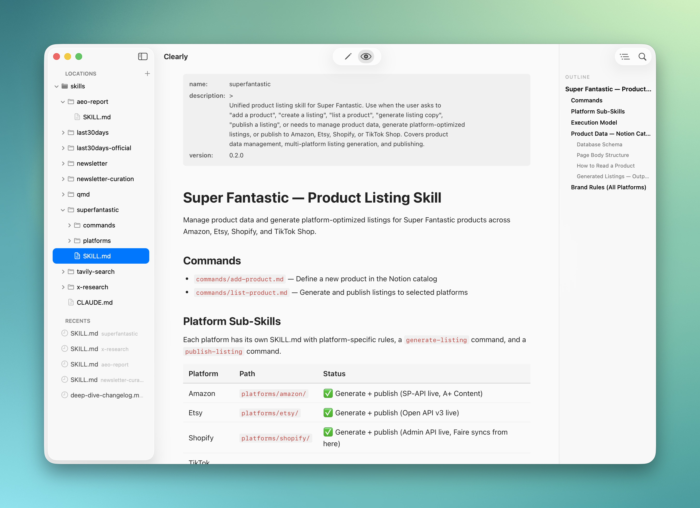

Clearly Markdown
A native markdown editor and document workspace for Mac. Open folders, browse your files, write with syntax highlighting, and preview instantly.
v1.16.0 · Requires macOS Sonoma or later

A native markdown editor and document workspace for Mac. Open folders, browse your files, write with syntax highlighting, and preview instantly.
v1.16.0 · Requires macOS Sonoma or later
